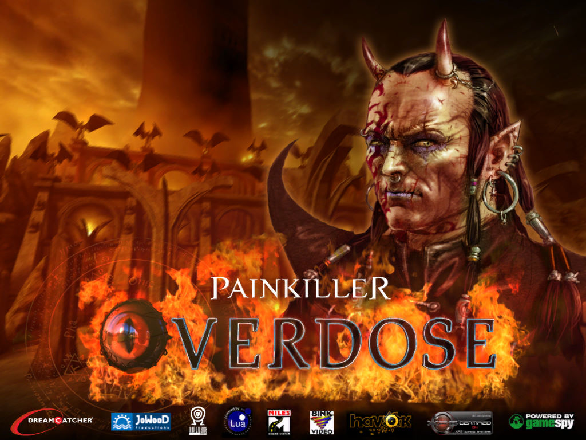
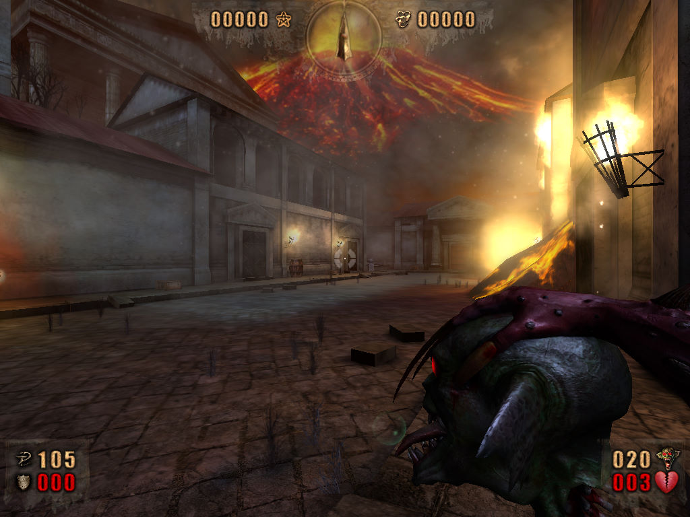

名稱：獵魔者：過量 (Painkiller: Overdose，英文版)
簡介：Mindware 2007年出品的第一人稱射擊遊戲，為「獵魔者」第一個獨立資料片，亦可視
為獨立遊戲，由DreamCatcher代理發行 [待補]。


保護：光碟SecuROM 7.33
備註：VirtualBox無法執行，虛擬機請使用VMware。
檔案：OverdosePatch84.rar = 84.4更新檔
nocd10.rar = 1.0免光碟檔
nocd84.rar = 84.4免光碟檔